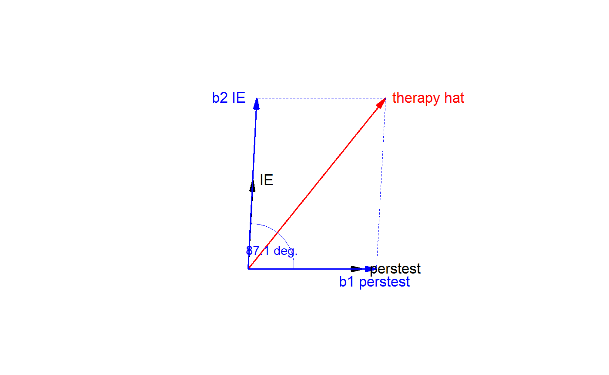

regvec3d calculates the 3D vectors that represent the projection of a two-variable multiple
regression model from n-D observation space into the 3D mean-deviation variable space that they span, thus
showing the regression of y on x1 and x2 in the model lm(y ~ x1 + x2).
The result can be used to draw 2D and 3D vector diagrams accurately reflecting the partial and marginal
relations of y to x1 and x2 as vectors in this representation.
Usage
regvec3d(x1, ...)
# S3 method for class 'formula'
regvec3d(
formula,
data = NULL,
which = 1:2,
name.x1,
name.x2,
name.y,
name.e,
name.y.hat,
name.b1.x1,
name.b2.x2,
abbreviate = 0,
...
)
# Default S3 method
regvec3d(
x1,
x2,
y,
scale = FALSE,
normalize = TRUE,
name.x1 = deparse(substitute(x1)),
name.x2 = deparse(substitute(x2)),
name.y = deparse(substitute(y)),
name.e = "residuals",
name.y.hat = paste0(name.y, "hat"),
name.b1.x1 = paste0("b1", name.x1),
name.b2.x2 = paste0("b2", name.x2),
name.y1.hat = paste0(name.y, "hat 1"),
name.y2.hat = paste0(name.y, "hat 2"),
...
)Arguments
- x1
The generic argument or the first predictor passed to the default method
- ...
Arguments passed to methods
- formula
A two-sided formula for the linear regression model. It must contain two quantitative predictors (
x1andx2) on the right-hand-side. If further predictors are included,y,x1andx2are taken as residuals from the their linear fits on these variables.- data
A data frame in which the variables in the model are found
- which
Indices of predictors variables in the model taken as
x1andx2- name.x1
Name for
x1to be used in the result and plots. By default, this is taken as the name of thex1variable in theformula, possibly abbreviated according toabbreviate.- name.x2
Ditto for the name of
x2- name.y
Ditto for the name of
y- name.e
Name for the residual vector. Default:
"residuals"- name.y.hat
Name for the fitted vector
- name.b1.x1
Name for the vector corresponding to the partial coefficient of
x1- name.b2.x2
Name for the vector corresponding to the partial coefficient of
x2- abbreviate
An integer. If
abbreviate >0, the names ofx1,x2andyare abbreviated to this length before being combined with the othername.*arguments- x2
second predictor variable in the model
- y
response variable in the model
- scale
logical; if
TRUE, standardize each ofy,x1,x2to standard scores- normalize
logical; if
TRUE, normalize each vector relative to the maximum length of all- name.y1.hat
Name for the vector corresponding to the marginal coefficient of
x1- name.y2.hat
Name for the vector corresponding to the marginal coefficient of
x2
Value
An object of class “regvec3d”, containing the following components
- model
The “lm” object corresponding to
lm(y ~ x1 + x2).- vectors
A 9 x 3 matrix, whose rows correspond to the variables in the model, the residual vector, the fitted vector, the partial fits for
x1,x2, and the marginal fits ofyonx1andx2. The columns effectively representx1,x2, andy, but are named"x","y"and"z".
Details
If additional variables are included in the model, e.g., lm(y ~ x1 + x2 + x3 + ...), then
y, x1 and x2 are all taken as residuals from their separate linear fits
on x3 + ..., thus showing their partial relations net of (or adjusting for) these additional predictors.
A 3D diagram shows the vector y and the plane formed by the predictors,
x1 and x2, where all variables are represented in deviation form, so that
the intercept need not be included.
A 2D diagram, using the first two columns of the result, can be used to show the projection
of the space in the x1, x2 plane.
In these views, the ANOVA representation of the various sums of squares for the regression
predictors appears as the lengths of the various vectors. For example, the error sum of
squares is the squared length of the e vector, and the regression sum of squares is
the squared length of the yhat vector.
The drawing functions vectors and link{vectors3d} used by the plot.regvec3d method only work
reasonably well if the variables are shown on commensurate scales, i.e., with
either scale=TRUE or normalize=TRUE.
Methods (by class)
regvec3d(formula): Formula method for regvec3dregvec3d(default): Default method for regvec3d
References
Fox, J. (2016). Applied Regression Analysis and Generalized Linear Models, 3rd ed., Sage, Chapter 10.
Fox, J. and Friendly, M. (2016). "Visualizing Simultaneous Linear Equations, Geometric Vectors, and Least-Squares Regression with the matlib Package for R". useR Conference, Stanford, CA, June 27 - June 30, 2016.
See also
Other vector diagrams:
Proj(),
arc(),
arrows3d(),
circle3d(),
corner(),
plot.regvec3d(),
pointOnLine(),
vectors(),
vectors3d()
Examples
library(rgl)
therapy.vec <- regvec3d(therapy ~ perstest + IE, data=therapy)
therapy.vec
#> x y z
#> perstest 0.50000000 0.0000000 0.0000000
#> IE 0.02000000 0.3893584 0.0000000
#> therapy 0.60000000 0.7499516 0.2785185
#> residuals 0.00000000 0.0000000 0.2785185
#> therapy hat 0.60000000 0.7499516 0.0000000
#> b1 perstest 0.56147757 0.0000000 0.0000000
#> b2 IE 0.03852243 0.7499516 0.0000000
#> therapy hat 1 0.60000000 0.0000000 0.0000000
#> therapy hat 2 0.04000000 0.7787169 0.0000000
plot(therapy.vec, col.plane="darkgreen")
plot(therapy.vec, dimension=2)
